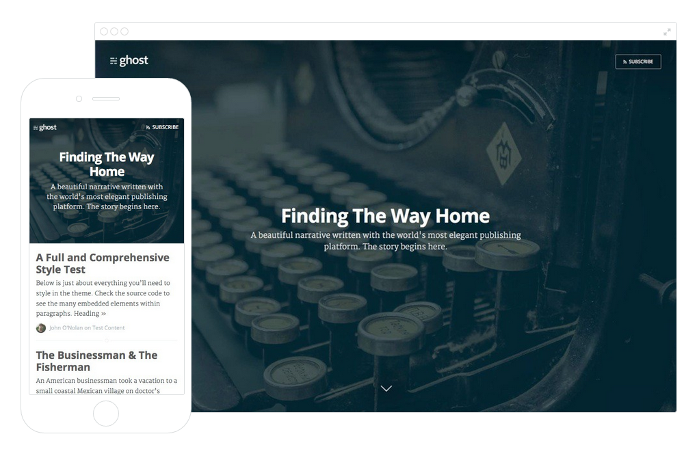
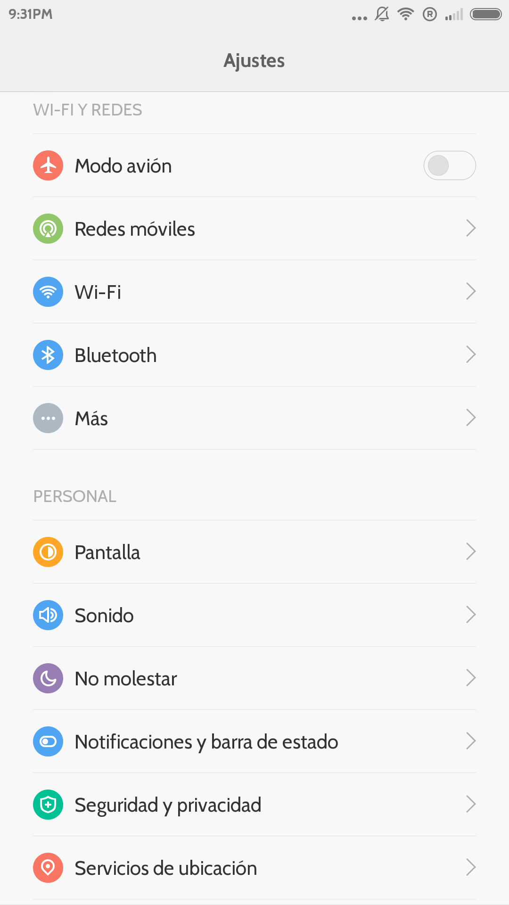
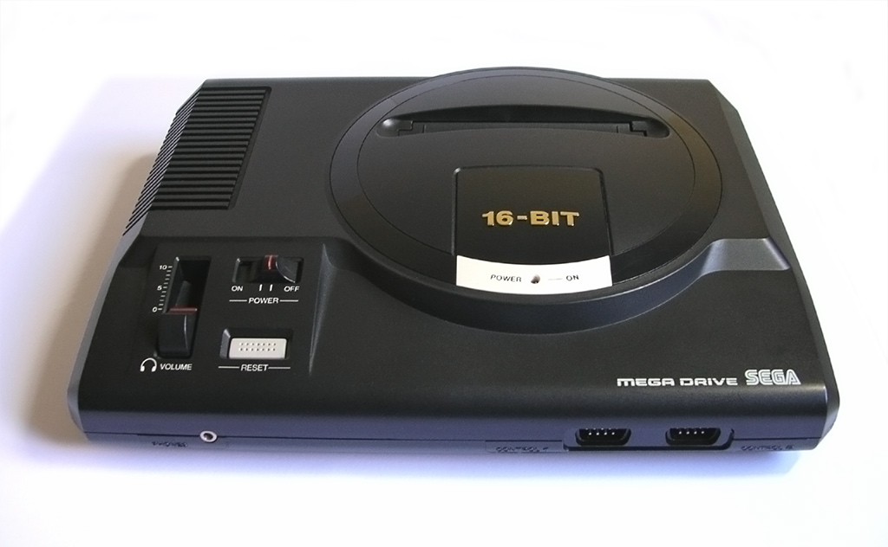
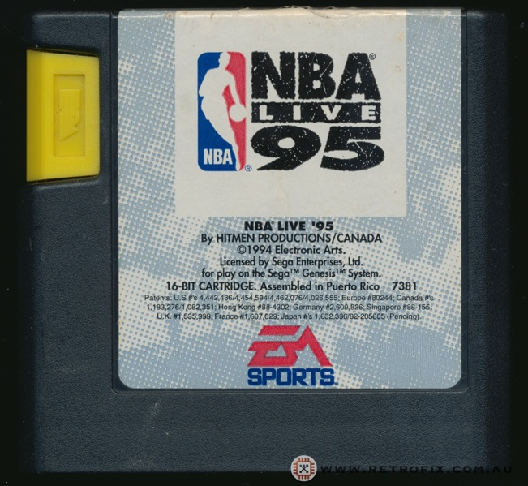

<?xml version="1.0" encoding="UTF-8"?>
<rss xmlns:dc="http://purl.org/dc/elements/1.1/" xmlns:content="http://purl.org/rss/1.0/modules/content/" xmlns:atom="http://www.w3.org/2005/Atom" version="2.0"><channel><title><![CDATA[José López]]></title><description><![CDATA[Pasión geek]]></description><link>http://www.jose.ga/</link><generator>Ghost v0.4.2</generator><lastBuildDate>Sun, 14 Dec 2014 16:29:49 GMT</lastBuildDate><atom:link href="http://www.jose.ga/rss/" rel="self" type="application/rss+xml"/><ttl>60</ttl><item><title><![CDATA[Instalando Ghost en local y en un Mac]]></title><description><![CDATA[<p>Lo primero que haremos es dirigirnos a la web oficial <a href='https://ghost.org/' >ghost.org</a> y <a href='https://ghost.org/download/' >descargar</a> la versión más reciente. El archivo en cuestión se trata de un archivo comprimido que una vez descargado, descomprimiremos y lo pondremos, por ejemplo en la raíz del disco duro.</p>

<p>A través del terminal no dirigimos a esa ubicación.</p>

<p><code>cd ghost</code></p>

<p>Procederemos a instalarlo.</p>

<p><code>npm install --production</code></p>

<p>Después lo arrancaremos, ya en local.</p>

<p><code>npm start</code></p>

<p>Nos indicará que ya está operativo en la dirección <strong>127.0.0.1:2368</strong> </p>

<p>Lo primero que haremos será crear una cuenta de administrador (<strong>127.0.0.1:2368/admin</strong>) y ya podemos empezar a bloguear en local …</p>

<p></p>]]></description><link>http://www.jose.ga/instalando-ghost-en-local-en-un-mac/</link><guid isPermaLink="false">01be8b1c-a848-406b-a3d1-ec958617974a</guid><category><![CDATA[Ghost]]></category><dc:creator><![CDATA[jose]]></dc:creator><pubDate>Sun, 14 Dec 2014 16:26:58 GMT</pubDate></item><item><title><![CDATA[Un nuevo componente en mi familia]]></title><description><![CDATA[<p>Hoy llegó un nuevo componente para mi familia. Se trata de Koke un cocker spaniel de dos meses de edad y de color canela. Un cachorro super guapo y cariñoso que ya se ha ganado el cariño de tod@s nosotros.</p>

<p><blockquote class="instagram-media" data-instgrm-captioned data-instgrm-version="4" style=" background:#FFF; border:0; border-radius:3px; box-shadow:0 0 1px 0 rgba(0,0,0,0.5),0 1px 10px 0 rgba(0,0,0,0.15); margin: 1px; max-width:658px; padding:0; width:99.375%; width:-webkit-calc(100% - 2px); width:calc(100% - 2px);"><div style="padding:8px;"> <div style=" background:#F8F8F8; line-height:0; margin-top:40px; padding:50% 0; text-align:center; width:100%;"> <div style=" background:url(); display:block; height:44px; margin:0 auto -44px; position:relative; top:-22px; width:44px;"></div></div> <p style=" margin:8px 0 0 0; padding:0 4px;"> <a href='https://instagram.com/p/vQxNrgo-KH/'  style=" color:#000; font-family:Arial,sans-serif; font-size:14px; font-style:normal; font-weight:normal; line-height:17px; text-decoration:none; word-wrap:break-word;" target="_top">Un nuevo componente de mi familia :)</a></p> <p style=" color:#c9c8cd; font-family:Arial,sans-serif; font-size:14px; line-height:17px; margin-bottom:0; margin-top:8px; overflow:hidden; padding:8px 0 7px; text-align:center; text-overflow:ellipsis; white-space:nowrap;">Una foto publicada por José (@jose.ga) on <time style=" font-family:Arial,sans-serif; font-size:14px; line-height:17px;" datetime="2014-11-11T14:00:26+00:00">Nov 11, 2014 at 6:00 PST</time></p></div></blockquote><script async defer src='http://platform.instagram.com/en_US/embeds.js' ></script> <br />
<center>Koke en su cama</center></p>]]></description><link>http://www.jose.ga/un-nuevo-componente-en-mi-familia/</link><guid isPermaLink="false">bfd4ada1-0d98-41c5-af96-33a8e74acb66</guid><category><![CDATA[cocker]]></category><category><![CDATA[perro]]></category><dc:creator><![CDATA[jose]]></dc:creator><pubDate>Wed, 12 Nov 2014 12:45:29 GMT</pubDate></item><item><title><![CDATA[Disfrutando de un iPhone 6]]></title><description><![CDATA[<p>Es lo que tiene cumplir años, que de vez en cuando cae como regalo algo super especial. Y este ha sido ese año. Mi mujer me ha regalado un iPhone 6 de 4,7 pulgadas y 64 Gb de capacidad.</p>

<p>Tengo que decir que es una pasada de móvil. Realmente es muy delgado (0,69 cm) y lo de desbloquear el móvil con la huella dactilar funciona a la perfección. Ahora a disfrutarlo!</p>

<p>Os dejo unas instantáneas del mismo.</p>

<p>

</p>]]></description><link>http://www.jose.ga/disfrutando-de-un-iphone-6/</link><guid isPermaLink="false">828be8e0-56d7-4a10-adc5-3f7ed7646ce0</guid><dc:creator><![CDATA[jose]]></dc:creator><pubDate>Sun, 26 Oct 2014 08:11:35 GMT</pubDate></item><item><title><![CDATA[Probando Jekyll]]></title><description><![CDATA[<p>Primero de todo, decir que <a href='http://jekyllrb.com/' >Jekyll</a> es un parser programado en Ruby que se utiliza para bloguear en estático.</p>

<p>Lo primero que hay que hacer es instalarlo en el ordenador</p>

<p><code>$ gem install jekyll</code></p>

<p>Después crearemos una carpeta donde vamos alojar localmente el blog.</p>

<p><code>$ jekyll new my-awesome-site</code></p>

<p><code>$ cd my-awesome-site</code></p>

<p>Y después arrancamos el serve</p>

<p><code>/my-awesome-site $ jekyll serve</code></p>

<p>Si todo va bien, Jekyll generará todo y te dará una URL donde ver el sitio generado, en mi caso es <a href='http://0.0.0.0:4000/' >http://0.0.0.0:4000</a>, que a posteriori pomos hospedar en <a href='https://pages.github.com/' >Github Pages</a>.</p>

<p></p>

<p>Ahora solo queda escribir posts y disfrutar de la velocidad y optimización.</p>]]></description><link>http://www.jose.ga/probando-jekyll/</link><guid isPermaLink="false">f25a9210-b137-48df-bd59-ab2c0b95e4e7</guid><dc:creator><![CDATA[jose]]></dc:creator><pubDate>Sun, 19 Oct 2014 16:42:36 GMT</pubDate></item><item><title><![CDATA[Instalando MIUI6 en mi Xiaomi MI3W]]></title><description><![CDATA[<p><strong>Miui</strong> es un firmware para smartphones basado en el sistema operativo de código abierto Android desarrollado por Xiaomi Tech y viendo que había salido la version oficial de MIUI6 y que ya se encontraba disponible la Rom traducida al español por parte de los chicos de <a href='http://www.jose.ga/miui.es' >miui.es</a>, me decidí a actualizar mi Xiaomi MI3W de MIUI v5 a MIUI6</p>

<p></p>

<h1 id="proceso">Proceso</h1>

<p>Antes de nada lo que hice fue actualizar mi <strong>CWM Recovery</strong> a la versión 6.0.5.0. Para ello, después de <a href='http://www.mediafire.com/download/5d8m6ha282hztv2/CWM_Recovery_r8_Mi4_Mi3_Cancro_20140911_signed.zip' >descargar el archivo</a>, lo coloque en la raíz de la memoria del teléfono, reinicié en el recovery e instalé como si de una ROM se tratase.</p>

<p>Las características de este recovery son las siguientes:</p>

<p>•    Activación y desactivación de True Dual Boot<br>
•    Aroma File Manager<br>
•    Manejo con la pantalla táctil<br>
•    Limpieza de la partición /data (wipe data)<br>
•    Limpieza de la caché (wipe cache)<br>
•    Creación y restauración de copias de seguridad NAND (sistema y datos)<br>
•    Apagado del dispositivo<br>
•    ADB en modo recovery</p>

<p>Actualizado el CWM recovery procedí a descargar la <a href='http://www.mediafire.com/download/j9xlnpx543xf6gk' >Rom (4.9.9)</a> traducida por miui.es y a copiarla a la memoria interna (Internal Storage) del Mi3W.</p>

<p>Apagué el móvil y lo inicié en modo Recovery (Pulsando Botón Encendido + Volumen Arriba).</p>

<p>Seleccioné el system donde instalar la rom (system1)</p>

<p>Hice los wipes "wipe data/factory reset" "wipe cache partition" y “wipe dalvik cache" para hacer una instalación limpia.</p>

<p>Después seleccioné las opciones: "Install zip from sdcard" --> "chosse zip from sdcard" --> "0/"</p>

<p>Navegué por los archivos hasta encontrar y seleccionar el archivo .zip de la Rom. Confirmé la instalación  y esta se realizó.</p>

<p>Para finalizar reinicié pulsando "reboot system now”, dando por finalizado la instalación.</p>

<h1 id="pantallazos">Pantallazos</h1>

<p>

</p>]]></description><link>http://www.jose.ga/instalando-miui6-en-mi-xiaomi-mi3w/</link><guid isPermaLink="false">e0c0370c-738f-4bec-92fb-f8735f381d75</guid><category><![CDATA[Miui]]></category><dc:creator><![CDATA[jose]]></dc:creator><pubDate>Mon, 15 Sep 2014 15:57:27 GMT</pubDate></item><item><title><![CDATA[Vuelta al tedio]]></title><description><![CDATA[<p>Puede sonar fuerte pero es lo que tiene el sufrir la depresión postvacacional. Según los expertos (psiquiatras y psicólogos) hay que retomar la rutina unos días antes de empezar a trabajar para que el regreso a lo cotidiano no sea demasiado duro, durmiendo nuestras horas y practicando hábitos saludables. Y en ello estamos …</p>]]></description><link>http://www.jose.ga/vuelta-al-tedio/</link><guid isPermaLink="false">ad64925e-c47f-446e-95fa-3b4c98f145c3</guid><category><![CDATA[Personal]]></category><dc:creator><![CDATA[jose]]></dc:creator><pubDate>Mon, 01 Sep 2014 15:34:36 GMT</pubDate></item><item><title><![CDATA[Objeto de deseo]]></title><description><![CDATA[<p>En la búsqueda de un regalo de cumpleaños para mi hermano y casi sin querer, me encontré a la venta en una tienda un juego antiguo para la videoconsola SEGA Mega Drive, que me provocó sentimientos de nostalgia. Es lo que tiene la retroinformática.</p>

<p></p>

<p>El juego en cuestión es el NBA Live 95 y como sabía que siempre fue objeto de su deseo no pude dejar pasar la ocasión.</p>

<p></p>

<p>He de decir que acerté plenamente ya que la cara de satisfacción de mi hermano así lo denotaba.</p>]]></description><link>http://www.jose.ga/objeto-de-deseo/</link><guid isPermaLink="false">21b004e4-0721-4609-bd23-3e040690354c</guid><category><![CDATA[Retroinformática]]></category><dc:creator><![CDATA[jose]]></dc:creator><pubDate>Mon, 01 Sep 2014 15:29:14 GMT</pubDate></item><item><title><![CDATA[Bienvenidos a mi blog]]></title><description><![CDATA[<p>Este es mi blog personal creado con <a href='http://ghost.org/' >Ghost</a> en local, generado en estático con <a href='https://github.com/axitkhurana/buster' >Buster</a> y alojado en <a href='http://pages.github.com/' >GitHub Pages</a>.</p>

<p>Ya había tenido un acercamiento a Ghost con un blog que cree hace tiempo y que aloje en una Raspberry Pi y la experiencia me encantó. Estuve mirando algun hosting gratuito con node.js para mi blog personal pero al no encontrar nada me he decidido a crearlo y generarlo estaticamente en local para después subirlo a GitHub Pages donde queda redirecionado a mi propio dominio :-)</p>]]></description><link>http://www.jose.ga/bienvenidos-a-mi-blog/</link><guid isPermaLink="false">d4a2f9ec-eff5-4038-ae1e-a18fe68b8f53</guid><category><![CDATA[Ghost]]></category><dc:creator><![CDATA[jose]]></dc:creator><pubDate>Fri, 02 May 2014 20:00:49 GMT</pubDate></item><item><title><![CDATA[Welcome to Ghost]]></title><description><![CDATA[<p>You're live! Nice. We've put together a little post to introduce you to the Ghost editor and get you started. You can manage your content by signing in to the admin area at <code>&lt;your blog URL&gt;/ghost/</code>. When you arrive, you can select this post from a list on the left and see a preview of it on the right. Click the little pencil icon at the top of the preview to edit this post and read the next section!</p>

<h2 id="gettingstarted">Getting Started</h2>

<p>Ghost uses something called Markdown for writing. Essentially, it's a shorthand way to manage your post formatting as you write!</p>

<p>Writing in Markdown is really easy. In the left hand panel of Ghost, you simply write as you normally would. Where appropriate, you can use <em>shortcuts</em> to <strong>style</strong> your content. For example, a list:</p>

<ul>
<li>Item number one</li>
<li>Item number two
<ul><li>A nested item</li></ul></li>
<li>A final item</li>
</ul>

<p>or with numbers!</p>

<ol>
<li>Remember to buy some milk  </li>
<li>Drink the milk  </li>
<li>Tweet that I remembered to buy the milk, and drank it</li>
</ol>

<h3 id="links">Links</h3>

<p>Want to link to a source? No problem. If you paste in url, like <a href='http://ghost.org/' >http://ghost.org</a> - it'll automatically be linked up. But if you want to customise your anchor text, you can do that too! Here's a link to <a href='http://ghost.org/' >the Ghost website</a>. Neat.</p>

<h3 id="whataboutimages">What about Images?</h3>

<p>Images work too! Already know the URL of the image you want to include in your article? Simply paste it in like this to make it show up:</p>

<p></p>

<p>Not sure which image you want to use yet? That's ok too. Leave yourself a descriptive placeholder and keep writing. Come back later and drag and drop the image in to upload:</p>

<h3 id="quoting">Quoting</h3>

<p>Sometimes a link isn't enough, you want to quote someone on what they've said. It was probably very wisdomous. Is wisdomous a word? Find out in a future release when we introduce spellcheck! For now - it's definitely a word.</p>

<blockquote>
  <p>Wisdomous - it's definitely a word.</p>
</blockquote>

<h3 id="workingwithcode">Working with Code</h3>

<p>Got a streak of geek? We've got you covered there, too. You can write inline <code>&lt;code&gt;</code> blocks really easily with back ticks. Want to show off something more comprehensive? 4 spaces of indentation gets you there.</p>

<pre><code>.awesome-thing {
    display: block;
    width: 100%;
}
</code></pre>

<h3 id="readyforabreak">Ready for a Break?</h3>

<p>Throw 3 or more dashes down on any new line and you've got yourself a fancy new divider. Aw yeah.</p>

<hr />

<h3 id="advancedusage">Advanced Usage</h3>

<p>There's one fantastic secret about Markdown. If you want, you can  write plain old HTML and it'll still work! Very flexible.</p>

<p><input type="text" placeholder="I'm an input field!" /></p>

<p>That should be enough to get you started. Have fun - and let us know what you think :)</p>]]></description><link>http://www.jose.ga/welcome-to-ghost/</link><guid isPermaLink="false">219d0b2f-5503-47b2-9749-bf38ee984424</guid><category><![CDATA[Getting Started]]></category><dc:creator><![CDATA[jose]]></dc:creator><pubDate>Wed, 30 Apr 2014 10:38:19 GMT</pubDate></item></channel></rss>